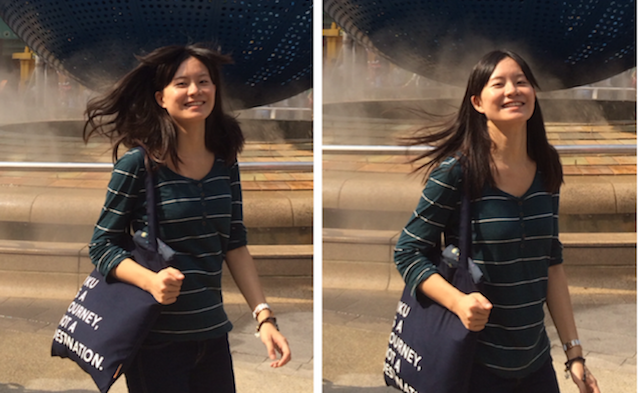
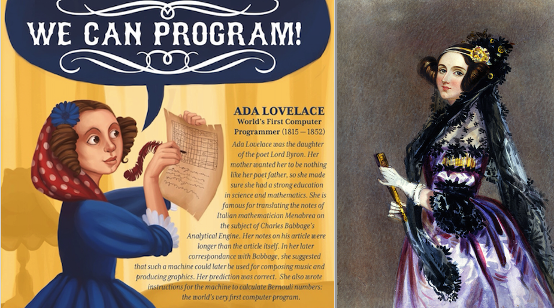

There may be no Silver Bullet, in the field of my major - Software Engineering. But there could be Rose Bullet - Persistence and Gratitude, during my lifelong journey.

Hey there, welcome!
I’m Xenia [‘zi:niə],[‘zinɪə]. This English name was made from the actress Xenia Goodwin of my favorite drama Dance Academy, a drama that motivates me much during my teenage age.
My Chinese name is Qian Xin (钱 昕). You may find it easy to pronounce as Chien Hsin ;D. Xin is my first name, which has the meaning of [Dawn] (http://en.wikipedia.org/wiki/Dawn), the time when the sun rises.
I love both my English name and my Chinese name because the meaning in them are positive, even beyond their original language and transcend different cultures.
I am currently an undergraduate student in Zhejiang University, studying Software Engineering, graduating in 2017. I was exchanged to the University of Hong Kong, in the year of 2014-2015, studying Computer Science. [Continuing..]
Since secondary school, Math and Programming have interested my a lot. The story of Ada Lovelace, the first female Computer Scientist, also inspired me while learning.

Thanks to the Poole project. This personal blog is built on Poole GitHub Repo, Jekyll and hosted on GitHub.
If you like this blog, follow me on Facebook, Linkedin, or GitHub.